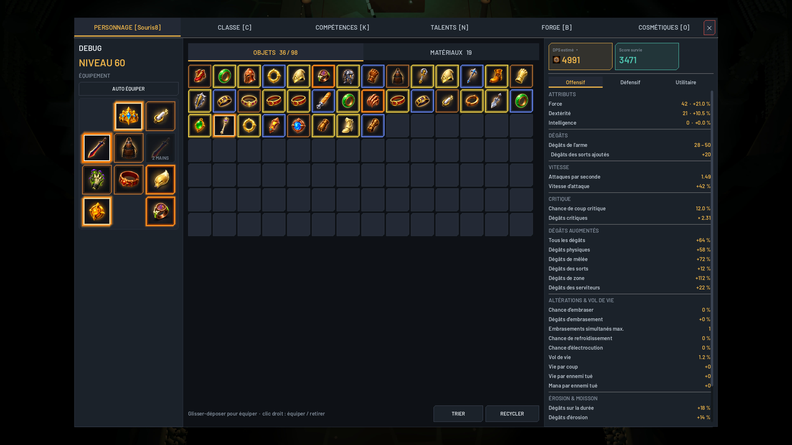
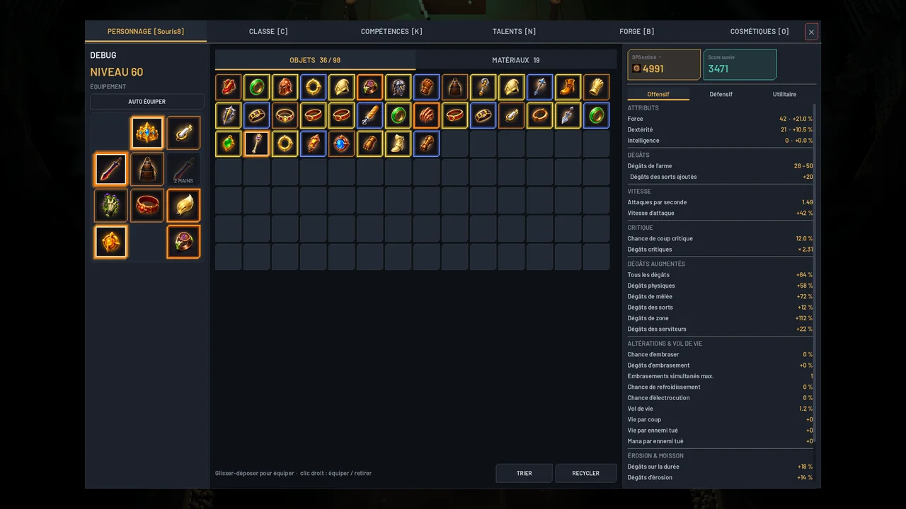

Version 0.5.0 · November 1, 2026
The ash forge
The forge remade from top to bottom, a single starting skill per class and icons that stay sharp at every scale.
The ash forge
Three affix qualities — Normal, Special and Ultimate — each with its own stats. A before/after comparison shows the transformed item line by line, with Cancel, Reforge or Confirm. The best tiers are protected and shine with a golden halo.
A real start
A single basic skill per class, the others are earned in play; you start with no gear, no aura and no elixir.
Interface and options
Generated icons for the whole game, a tooltip pinned on click with a direct Forge button, resolutions up to 4K, an interface scale from 75 to 200% and five adjustable volumes.

Patch notes
Forge
- Forge remade from top to bottom: three affix qualities — Normal, Special and Ultimate — each with its own stats. A line no longer shows “maximum life” in all three qualities: each quality brings different, increasingly powerful effects.
- Before/after comparison right in the panel: the old and the new version of the item side by side, an arrow between them, the changed line highlighted in red (before) and green (after). No more separate window.
- Cancel / Reforge / Confirm buttons under the comparison; the right-hand panel always keeps the materials and possible results.
- Caps: two special and two ultimate affixes per item, prefixes and suffixes combined. Lines that are already special or ultimate shine in their colour, and the pool stays viewable even when the cap is reached.
- Protected T1: reforging a line already at the best tier asks for confirmation, with a “Don't ask again this session” box.
- T1 tier: a golden halo on the item card and a satisfying sound; no more stray text or confetti.
- High-level items: the worst tiers are removed from the roll (always at least three tiers), and the best tier becomes the rarest — about 17% T1, 33% T2, 50% T3.
- Tiers shown to the left of the lines in a stylised frame, with a gradient colour (gold → pink → turquoise → blue → purple) identical in every window.
- Rerolls, re-energising and corruption moved to the centre, under the affixes: they apply directly, only the forge goes through the comparison.
- Belt affixes finally talk about elixirs rather than potions.
Characters and balance
- A single basic skill per class: the others are earned in play.
- Start without equipment, without an aura or an elixir.
- Flat level bonus removed from attacks and fixed-damage weapons: no more damage exploding without gear.
- Cast and attack speed shown in attacks/second, with the time per cast.
- Reliable auto-equip (both rings in the same click) and a DPS/toughness comparison in the tooltip.
Interface and comfort
- Generated icons for items, materials, skills, classes and talents, sharp at every interface scale.
- Clicking an equipped item: a pinned tooltip, hoverable keywords and a direct Forge button.
- Item tooltip: energy as a bar, fixed damage, required level highlighted.
- Unlock banners with the icon of the skill or support.
- Sharper interface fonts, lighter comparison and forge texts.
Options and display
- Window resolution: 720p, 900p, 1080p, 2K and 4K (window re-centred; ignored in fullscreen).
- Interface scale from 75% to 200% on a continuous slider.
- Five volumes (master, effects, interface, music, ambience) applied live, showing Mute at zero; the music resumes as soon as you raise its slider.
- Icons follow the screen's real resolution, with no blurry upscaling.
Audio and world
- Generated music and ambiences for every act, zone and boss; interface, forge and unlock sounds reworked.
- Hub on the island of Hautecrête, acts II and III, Quaternius and Kenney scenery, floors without visible tiles.
Fixes
- Missing music when launching from the menu, volume sliders with no effect, failing class start tests.
- Tooltips that stayed stuck, item comparison and inventory sorting.